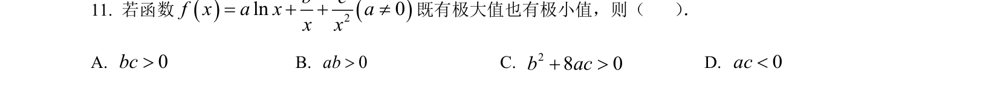
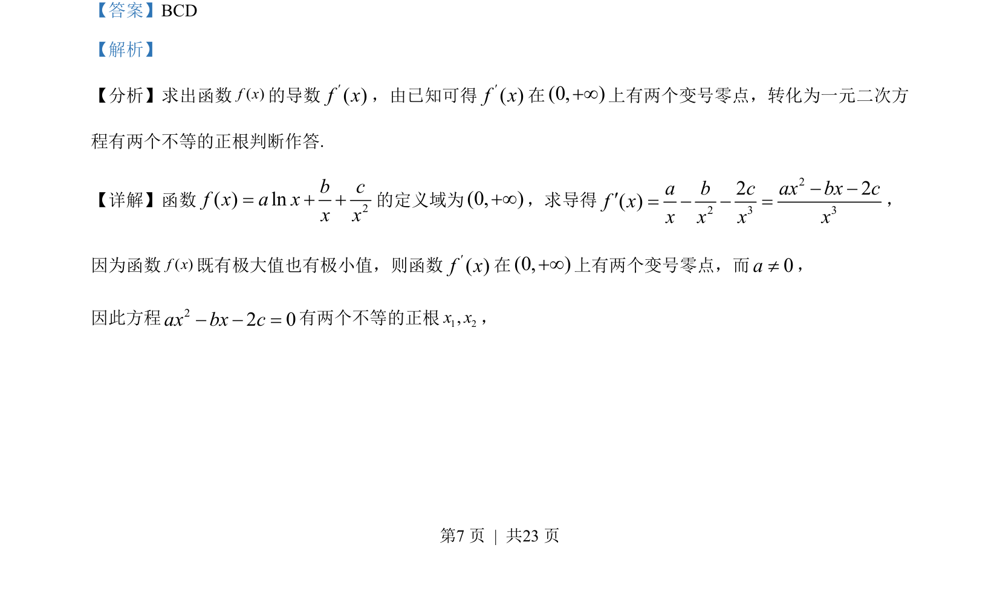
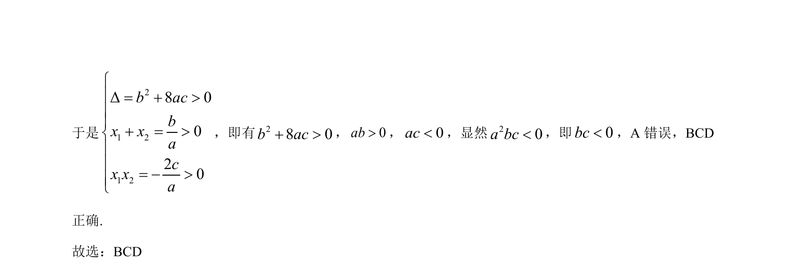

考点：导数与极值 二次方程根的分布 韦达定理

利用导数研究函数极值的存在性，转化为二次方程正根的判别条件。


📄 原 PDF 第 7 页：
素材/真题/吉林/2008-2024·（吉林）数学高考真题/2023年高考数学试卷（新课标Ⅱ卷）（解析卷）.pdf
【答案】BCD 【解析】 【分析】求出函数( )f x的导数( )f x¢，由已知可得( )f x¢在(0, )¥上有两个变号零点，转化为一元二次方 程有两个不等的正根判断作答. 【详解】函数 2( ) lnb cf x a xx x= 的定义域为(0, )¥，求导得 22 3 32 2( )a b c ax bx cf xx x x x ¢= =， 因为函数( )f x既有极大值也有极小值，则函数( )f x¢在(0, )¥上有两个变号零点，而0a¹， 因此方程22 0ax bx c =有两个不等的正根1 2,x x，